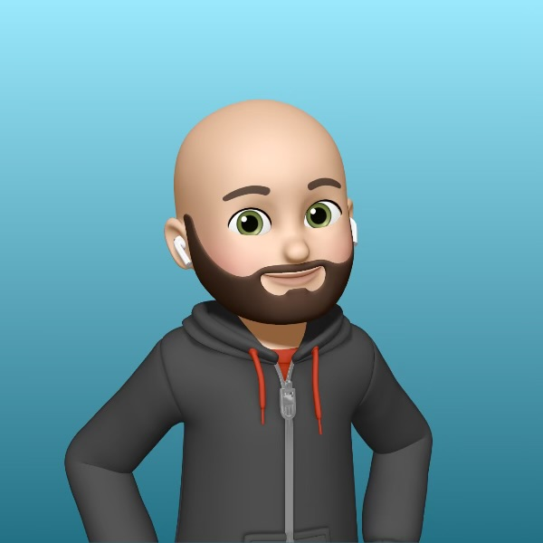

I run the technology people use every day: the laptops, the collaboration tools, and the support teams that keep it all working. For 12+ years I've been making that experience faster, safer, and a lot less frustrating.
I spent nearly thirteen years at Wake Forest University, starting on the service desk and working up to Associate Director of Client Services. Along the way I led the teams behind client technologies, the service desk, and executive support. I also helped turn a mostly-Windows campus into one where almost half the fleet runs macOS, without giving up anything on security.
Today I'm a Manager of IT Support Services at Atrium Health Wake Forest Baptist. My field services team keeps technology running across hospitals and clinics in High Point and Greensboro.
I like automation more than repetition, data more than anecdotes, and tools that get out of people's way. Outside of work I'm usually building something of my own, like small scripts, command-line tools, or websites like this one.
Jamf, Apple Business & School Manager, and zero-touch deployment. Apple invited me to present our Mac program at three of its events.
Google Workspace and Microsoft 365 administration, Chrome management, and the governance that keeps collaboration tidy.
Apps Script, AppSheet, and ServiceNow/Freshservice workflows that replace manual work and put real metrics behind decisions.
Evaluating and rolling out tools like Gemini and Copilot with practical use cases and sensible guardrails.
Advocate Health / Atrium Health Wake Forest Baptist. I lead a six-person field services team supporting hospital campuses, ambulatory sites, and specialty clinics.
Want to talk endpoint strategy, Workspace, or IT leadership? Reach out.